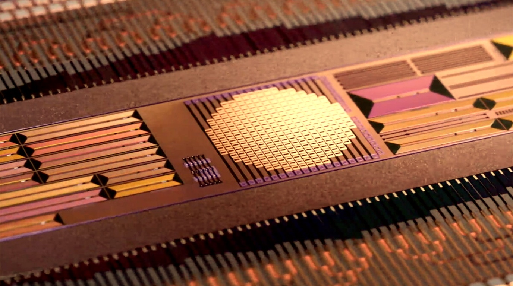

Photonic Superclusters Go Mainstream: OCP & Lightmatter Unveil 3.2T Optical Co-Packaged Interconnects Slashing AI Datacenter Power by 65%

BOSTON & SAN JOSE, CA — September 21, 2026 — In what datacenter architects describe as the most critical hardware transformation since the advent of the tensor processing unit, the Open Compute Project (OCP) alongside photonic computing pioneer Lightmatter and optical consortium partners have formally ratified and unveiled commercial 3.2-Terabit-per-second (3.2T) Optical Co-Packaged Optics (CPO) architectures for hyperscale AI superclusters.
As frontier models surpass the trillion-parameter scale, conventional electrical copper wiring between GPU and accelerator racks has hit an impenetrable physics barrier: electrical resistance generates extreme thermal dissipation while capacitive losses cause signal degradation beyond a few meters. By integrating laser waveguides and micro-ring modulators directly onto the silicon substrate alongside compute silicon, the 3.2T CPO standard reduces rack-to-rack interconnect electricity consumption by a staggering 65%.
1. Breaking the Copper Wall: Light at Scale
For decades, telecommunications networks transitioned from copper coaxial lines to fiber-optic cables over long distances, but inside the computer server, copper traces remained supreme. In AI clusters spanning 100,000 accelerators, however, copper interconnects now consume up to 30% of total datacenter energy solely pushing electrons through cables.
The newly standardized 3.2T CPO specification, codenamed PhotonGrid, fundamentally rewires datacenter topology:
- Direct On-Die Optical Packaging: Rather than converting electrical signals into light inside bulky pluggable optical transceivers at the chassis edge, silicon photonic chiplets reside millimeters away from high-bandwidth memory (HBM4) and compute logic.
- Sub-Picojoule Energy Efficiency: Transmission energy drops from ~15 picojoules per bit across copper retimers down to an astonishing 1.8 picojoules per bit via optical waveguide channels.
- Zero-Latency Exascale Fabric: Tens of thousands of accelerator dies across multiple server rows communicate as a single unified, flat memory fabric with uniform sub-microsecond latency.
"We have reached the end of the line for electrical copper in frontier artificial intelligence. Moving forward, intelligence is bounded not by compute silicon, but by how fast and cold we can move petabytes of data across the room. Photonic co-packaging is the bridge that makes million-chip clusters commercially viable."
OCP 3.2T CPO vs Legacy Copper Interconnects
2. Unlocking Next-Generation AI Superclusters
Major semiconductor foundries—including TSMC and Intel Foundry Services—have confirmed full volume qualification for optical engine wafer assembly. Tier-1 cloud providers including Microsoft Azure, AWS, and Google Cloud are integrating 3.2T optical fabrics into their multi-gigawatt datacenter expansions.
Beyond power savings, optical fabrics eliminate the physical cable congestion that has choked modern server racks. A single hair-thin optical fiber ribbon replaces thick bundles of shielded copper twinax cabling, dramatically improving airflow dynamics and allowing server enclosures to operate with quiet, simplified liquid cooling loops.
3. What This Means for Enterprise AI & SyncFlo
As photonic interconnects displace electrical bottlenecks, the cost per token for training and inferencing foundation models will plummet. High-speed, low-latency inter-chip communications enable distributed agent swarms to execute collaborative parallel reasoning tasks that were previously computationally prohibitive.
SyncFlo continues to track infrastructure breakthroughs at the silicon layer, ensuring our enterprise automation protocols leverage ultra-low-latency backend infrastructure to deliver instantaneous responses to users worldwide.